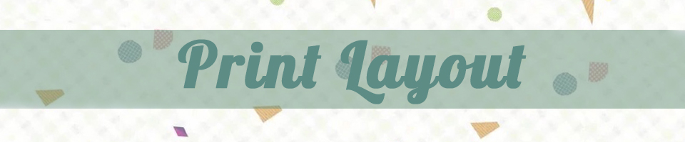

In design is my second favorite software in this class. I think typography is interesting. I think typography is fun and it's not difficult. Unlike animate, it takes too much time. I feel good about the experience of this software. The theme of my project is to make the picture look simple. I feel good about the experience of this software.